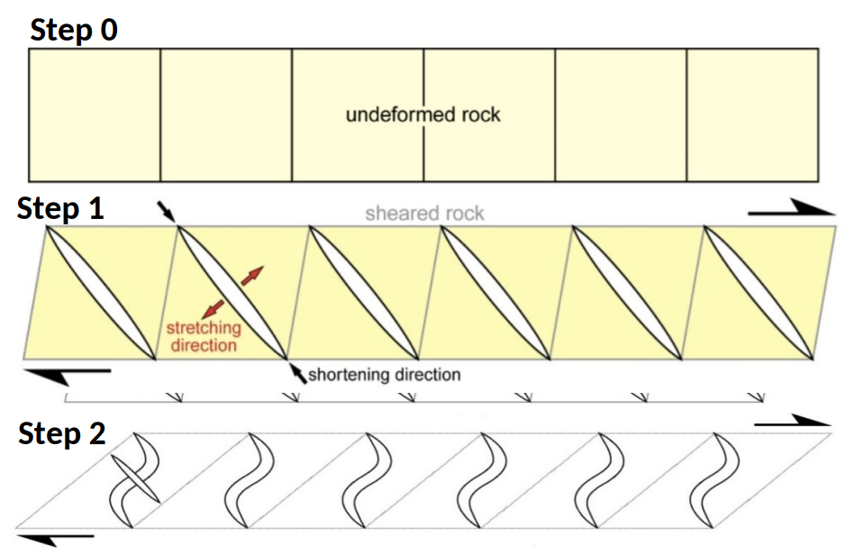

This is a fine-grained, massive rock of gray colour.
It contains several extensional fractures filled with a white mineral, likely calcite. These structures
are classified as veins. The dominant vein set forms a clear repetitive array of tension gashes called en-echelon arrays, most showing a pronounced sigmoidal shape. In addition to the prominent en-echelon veins, we can see several other, mostly non-pervasive veins, meaning that they do not extend through the entire rock. The material in these veins is continuous with the material in the en-echelon veins, showing that they are part of the same vein network. We can distinguish between primary and secondary veins, with the secondary veins ending where they meet the primary veins.
When shear stress on the rock becomes high enough, small tension cracks (tension gashes) open.They form perpendicular to the direction of greatest stretching (σ₃), which lies at about 45° to the shear zone boundary, so they are parallel to the direction of maximum compression (σ₁). Many of these cracks form next to each other, evenly spaced and slightly overlapping. This creates the enechelon pattern.
Fluids moving through the cracks deposit minerals such as quartz or calcite, so the cracks become veins. This often happens in several steps: the crack opens slightly, fills with minerals, and opens again.
Under progressive shearing, the existing parts of the veins are rotated in the direction of shear. They end up at a lower angle to the shear zone boundary than when they first formed.
The directions of σ₁ and σ₃ remain unchanged during the deformation, with σ₃ staying at about 45° to the shear zone boundary, while the rock and the veins in it are rotated by the shear. The vein tips keep growing perpendicular to σ₃, so they follow the original orientation. The older center of the vein has already rotated to a lower angle. This difference in orientation between the rotated center and the newly grown tips gives the vein its sigmoidal shape.
Note: In reality, this is a continuous process, not four separate phases. Under continued shearing, the cracks keep growing at their tips, while they are continuously filled with vein material. Fracturing, filling, rotation, and tip growth therefore happen at the same time, and the four steps above are only a simplification to explain the individual processes.

Todo ...